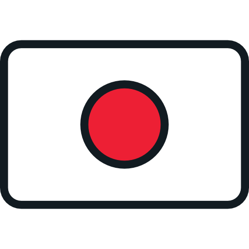

À propos de moi
Étudiant en deuxième année de BUT Métiers du Multimédia et de l’Internet, je me forme à la conception de projets numériques en combinant créativité, communication et maîtrise des outils digitaux.
Je me spécialise dans la communication digitale et la stratégie de contenu, avec l’envie de comprendre comment une marque ou un projet peut se construire, se positionner et engager son public à travers des supports pertinents.

Grâce à la diversité de la formation MMI, j’ai également développé des compétences complémentaires en design graphique, développement web, audiovisuel et gestion de projet, ce qui me permet d’avoir une vision globale et cohérente de la création numérique.
SOFTSKILLS
- ○ Aisance à l'oral
- ○ Travail d'équipe
- ○ Adaptabilité
- ○ Relationnel
- ○ Écoute
- ○ Autonomie
- ○ Organisation
- ○ Gestion du stress
LANGUES
 Anglais (C1)
Anglais (C1)
 Français natif
Français natif

Japonais (A2)Envie de collaborer ?
Je suis disponible pour discuter de vos projets !
Me contacter